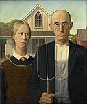
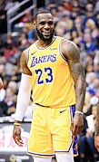
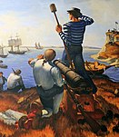
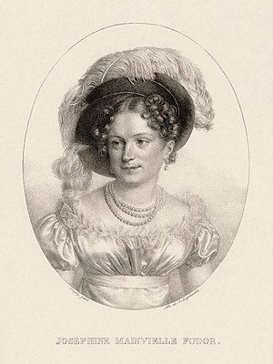
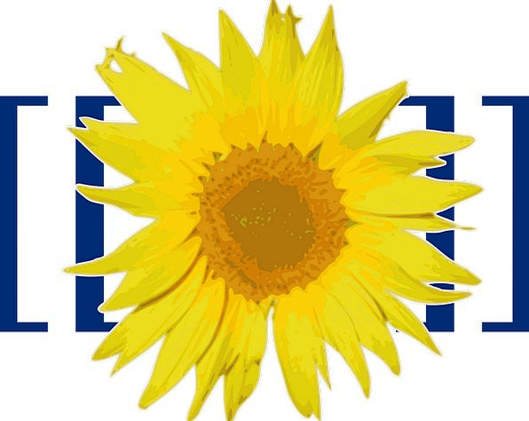

In other projects
Wikimedia Commons
MediaWiki
Meta-Wiki
Wikispecies
Wikibooks
Wikidata
Wikimania
Wikinews
Wikiquote
Wikisource
Wikiversity
Wikivoyage
Wiktionary
Languages
العربية
Български
Bosanski
Català
Čeština
Dansk
Deutsch
Eesti
Ελληνικά
Español
Esperanto
Euskara
فارسی
Français
Galego
한국어
Hrvatski
Bahasa Indonesia
Italiano
עברית
ქართული
Latviešu
Lietuvių
Magyar
Македонски
Bahasa Melayu
Nederlands
日本語
Norsk bokmål
Norsk nynorsk
Polski
Português
Română
Русский
Simple English
Slovenčina
Slovenščina
Српски / srpski
Srpskohrvatski / српскохрватски
Suomi
Svenska
ไทย
Türkçe
Українська
Tiếng Việt
中文
Complete list
From today's featured article
Mike Capel (born October
13, 1961) is a
former
former Major League
Baseball
former right-handed pitcher who played for the Chicago
Cubs, Milwaukee Brewers, and Houston Astros. In 49
career games,
Capel pitched 62.1 innings, struck out
43
batters, and
had a career win–loss record of 3–4 with a 4.62 earned run
average. A starting pitcher in college and
parts of his Minor League Baseball career, he converted to relief pitching
while in Chicago's minor league system. The
Philadelphia Phillies chose Capel in the 24th round of the 1980 Major League
Baseball draft, but instead of signing
with the team, he
opted to attend the University of Texas. He played on the 1982 USA
College All-Star Team,
which placed
third in the
Amateur World Series in Seoul. The next year, Capel and
the Texas Longhorns won the College World Series.
After he was
drafted by the Cubs, Capel left Texas and played in six seasons of the minor leagues
before he made his
major league
debut in 1988. (Full article...)
Did you know ...

American Gothic
- ... that Nan Wood Graham, the sister of painter Grant Wood, posed for her brother's 1930 painting American Gothic (pictured)?
- ... that Russian Bank, also known as Crapette or Tunj, has been called "probably the best game for two players ever invented"?
- ... that the name, sound and concept of the album What the Future Holds by Steps derives purely from the lyrics of the title track?
- ... that state representative Angela Russell introduced legislation to recognize Martin Luther King Jr. Day in Montana?
- ... that five-time world chess champion Viswanathan Anand and India's first woman Everest climber Bachendri Pal received the Arjuna award in the 1980s, then India's highest sporting honour?
- ... that a dispute between Llywelyn ap Gruffudd and Roger Mortimer over the rebuilding of Cefnllys Castle was one of the factors that led to Edward I's conquest of Wales?
- ... that soprano Ilse Helling-Rosenthal, her husband, and two others formed a vocal ensemble that appeared as the soloists in Bruckner's Te Deum at the Leipzig Gewandhaus in 1920?
- ... that Belgian waffles were introduced to the United States at the 1964 New York World's Fair?
In the news

LeBron James
- In basketball, the Los Angeles Lakers defeat the Miami Heat to win the NBA Finals (MVP LeBron James pictured).
- The UN World Food Programme is awarded the Nobel Peace Prize for its efforts to combat hunger.
- Poet Louise Glück is awarded the Nobel Prize in Literature.
On this day

Defense of the Cutter Eagle
- 645 – Goguryeo–Tang War: Led by Emperor Taizong, the Tang army was forced to abandon a siege of Ansi Fortress.
- 1814 – War of 1812: After three days of fighting (pictured), the beached U.S. Revenue Cutter Service vessel Eagle was captured by the Royal Navy.
- 1972 – Uruguayan Air Force Flight 571 crashed into a remote area in the Andes mountains near the border of Chile and Argentina; the 16 remaining survivors were not rescued until more than two months later.
- 2013 – During the Hindu festival of Navaratri at a temple in Madhya Pradesh, India, rumours about an impending bridge collapse caused a stampede that resulted in 115 deaths.
Today's featured picture

Joséphine Fodor
(13 October 1789
or in 1793 – 10 August 1870),
also known under the name Joséphine Fodor-Mainvielle, was
a French 19th-century lyrical artist (soprano) with Hungarian and
Dutch ancestors.
Her family moved
to Saint Petersburg
when she was an infant, probably because of the French Revolution. After
marrying in 1812, the
couple moved back to
France when Saint Petersburg came under attack during the French
invasion of Russia.
She performed
roles for the
Opéra-Comique in Paris, later being engaged by the Comédie-Italienne,
and also appeared in London,
Venice, Naples and
Vienna. Experiencing problems with her voice, she gradually ended her operatic
career and withdrew
from the stage. This
lithograph depicts her in 1815.
Lithograph credit: Jean-Baptiste Singry; restored by Adam Cuerden
Other areas of Wikipedia
- Community portal – Bulletin board, projects, resources and activities covering a wide range of Wikipedia areas.
- Help desk – Ask questions about using Wikipedia.
- Local embassy – For Wikipedia-related communication in languages other than English.
- Reference desk – Serving as virtual librarians, Wikipedia volunteers tackle your questions on a wide range of subjects.
- Site news – Announcements, updates, articles and press releases on Wikipedia and the Wikimedia Foundation.
- Village pump – For discussions about Wikipedia itself, including areas for technical issues and policies.
Wikipedia's sister projects
Wikipedia is hosted by the Wikimedia Foundation, a non-profit
organization that also
hosts a range
of
other projects:
Free media repository

Wiki software development
Wikimedia project coordination
Free textbooks and manuals
Free knowledge base
Free-content news
Collection of quotations
Free-content library
Directory of species
Free learning resources
Free travel guide
Dictionary and thesaurus
Wikipedia's sister projects
This Wikipedia is written in English. Started in 2001, it currently
contains 6,173,012
articles. Many
other Wikipedias
are available; some of the largest are listed below.
- More than 1,000,000 articles: العربية · Deutsch · Español · Français · Italiano · Nederlands · 日本語 · Polski · Português · Русский · Svenska · Українська · Tiếng Việt · 中文
- More than 250,000 articles: Bahasa Indonesia · Bahasa Melayu · Bân-lâm-gú · Български · Català · Čeština · Dansk · Esperanto · Euskara · فارسی · עברית · 한국어 · Magyar · Norsk Bokmål · Română · Srpski · Srpskohrvatski · Suomi · Türkçe
- More than 50,000 articles: Asturianu · Bosanski · Eesti · Ελληνικά · English (Simple English) · Galego · Hrvatski · Latviešu · Lietuvių · മലയാളം · Македонски · Norsk nynorsk · Slovenčina · Slovenščina · ไทย